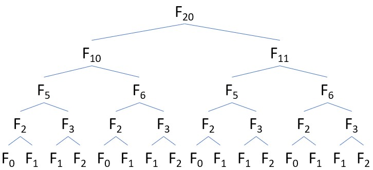
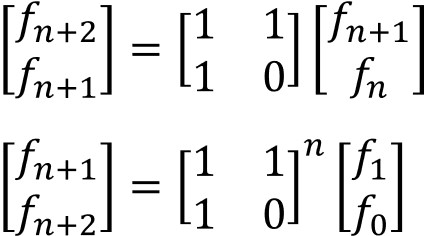
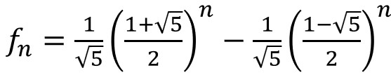
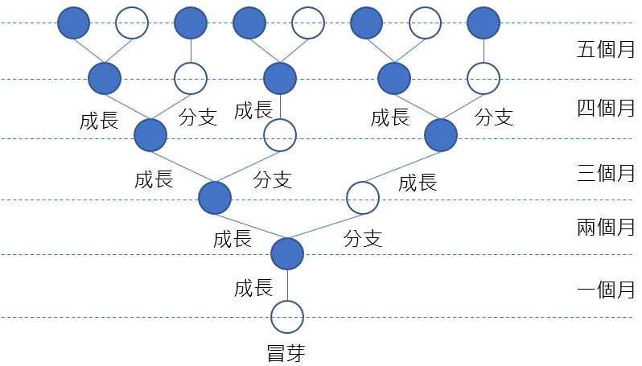
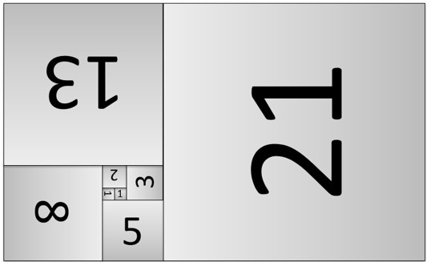
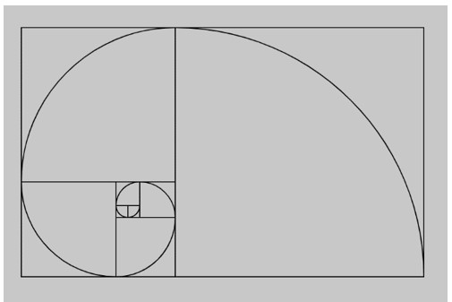
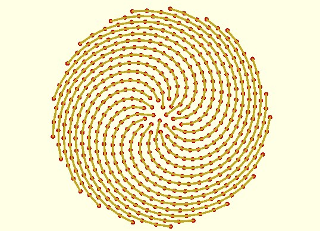
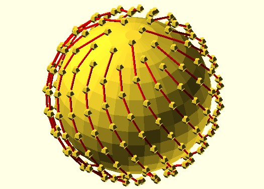

費氏數列
November 28, 2021歐洲數學家 Fibonacci 在 1202 年發表的《Liber abacci》中曾經提過一個「免子算術」：「若有兔子每個月生一隻小兔子，一個月小兔子也投入生產，那麼一開始是一隻兔子，一個月後就有兩隻兔子，二個月後有三隻兔子，三個月後有五隻兔子…」如果將每個月的數量逐一寫下，會是 1、1、2、3、5、8、13、21、34、55、89 …
可以將這個數字規納為以下，下個數字總會是前兩個數字的和，這就是 Fibonacci 數列，中文稱為費氏數列：
F₀ = 0
F₁ = 1
Fₙ = Fₙ₋₁ + Fₙ₋₂
如果某個費氏數除以上一個費氏數，比例會接近 1.618，也就是黄金比例，越大的費氏數相除會越接近這個數字；相對地，如果某個費氏數除以下一個費氏數，比例會接近0.618，也就是黃金分割比，它是最難用有理數逼近的無理數。
解法思路
費氏陣列的解法很多，基本上可以使用遞迴解：
Procedure FIB(N)
IF (N = 0 OR N = 1)
RETURN N
ELSE
RETURN FIB(N - 1) + FIB(N - 2)
不過在求每個費氏數時，都會發生重覆計算，效率不佳，單就執行次數上來說，有個使用遞迴的演算法會比較少：
Procedure FIB(N)
IF (N <= 1)
RETURN N;
IF (N = 2)
RETURN 1;
ELSE
i = N / 2;
f1 = FIB(i + 1)
f2 = FIB(i)
IF (N mod 2 = 0)
RETURN f2 * (2 * f1 + f2)
ELSE
RETURN f1² + f2²
若將遞迴的樹狀圖畫出來，就像這樣：

如果使用迴圈解：
Procedure FIB(N)
IF (N = 0 OR N = 1)
RETURN N
a = 0;
b = 1;
FOR i = 2 TO N
temp = b
b = a + b
a = temp
RETURN b;
若想一次列 N 之前的費氏數，可以使用陣列：
F[0] = 0
F[1] = 1
FOR i <- 2 TO N
F[i] = F[i - 1] + F[i - 2]
如果用矩陣來解費氏數列，可以使用以下：

那個矩陣稱為費氏 Q-Matrix，問題就變成矩陣的 n 次方問題。
想解決矩陣的 n 次方問題，方式之一是參考整數次方演算的快速次方演算，依照相同的概念，也可以實現實現矩陣版本的快速次方演算，用以求得費氏數。
當然，如果你熟悉線性代數的話，可以先求得特徵值（eigenvalues）與特徵向量（eigenvectors），進一步求得矩陣的 n 次方，最後可以推導，得到以下的公式，不過這個公式中會用到 √5，如果你在電腦中只是用 sqrt(5) 之類的方式來求 √5，結果與真正的 √5 還是有誤差的，如果你的 N 很大，誤差會被放大，也就不準確了，雖然也可以進一步使用更高的精度，不過得衡量是不是真的有效率，畢竟更高精度的運算並不是沒有代價：

如果兔子不只生一隻小兔子的話怎麼辦？這稱為擴充費氏數列：
F₀ = 0
F₁ = 1
Fₙ = X * Fₙ₋₁ + Y * Fₙ₋₂
當 X、Y 等於1時，就是一般的費氏數列了，費氏數列與自然界有神奇的關係，有興趣可以進一步參考〈兔子、鳳梨、向日葵、帕德能廟、正十邊形、鸚鵡螺〉。
來改變一下，現在不是兔子，而是樹枝成長，若有樹枝每個月分出一根樹枝，一個月新樹枝也投入生產，那麼一開始是一根樹枝，一個月後就有兩根樹枝，二個月後有三根樹枝，三個月後有五根樹枝…下圖畫出了過程：

這模擬了樹枝成長的過程，其中藍色部份是成熟的樹枝，每個月會分出新枝，白色的是新分支，一個月才會分支，當然，早成熟的樹枝也會越長越粗壯，如果繪圖時也考慮樹枝要長粗，就可能一棵樹的樣態了。
〈巴斯卡三角形〉裡隱藏著費氏數列；你可以使用費氏數列來進行〈費氏搜尋〉。
以下的黃金矩形圖片，由數個正方形組成，而正方形的邊長關係，就符合 Fibonacci 數列：

黃金螺線可以將黃金矩形中每個正方形的兩個對角，使用圓弧連接起來：

費氏晶格（Fibonacci lattice）演算演算中用到了黃金分割計算黃金角，因而以費氏為名，可以用來模仿向日葵的花蕊圖樣：

下圖是三維版本的費氏晶格演算：

程式實作
#include <stdio.h>
#include <stdlib.h>
#define LEN 20
void fill_fibonacci_numbers(int*, int);
void print(int*, int len);
int main(void) {
int fib[LEN] = {0};
fill_fibonacci_numbers(fib, LEN);
print(fib, LEN);
return 0;
}
void fill_fibonacci_numbers(int* fib, int len) {
fib[0] = 0;
fib[1] = 1;
int i;
for(i = 2; i < len; i++) {
fib[i] = fib[i-1] + fib[i-2];
}
}
void print(int* arr, int len) {
int i;
for(i = 0; i < len; i++) { printf("%d ", arr[i]); }
printf("\n");
}
import java.util.*;
public class Fibonacci {
private List<Integer> fib = new ArrayList<>();
{
fib.add(0);
fib.add(1);
}
Integer get(int n) {
if(n >= fib.size()) for(int i = fib.size(); i <= n; i++) {
fib.add(fib.get(i - 1) + fib.get(i - 2));
}
return fib.get(n);
}
public static void main(String[] args) {
Fibonacci fibonacci = new Fibonacci();
for(int i = 0; i < 20; i++) {
System.out.print(fibonacci.get(i) + " ");
}
}
}
def fibonacci(n, fib = [0, 1]):
if n >= len(fib):
for i in range(len(fib), n + 1):
fib.append(fib[i - 1] + fib[i - 2])
return fib[n]
for i in range(0, 20):
print(fibonacci(i), end=' ')
def fib(n: Int): Int = n match {
case 0 => 0
case 1 => 1
case _ => fib(n - 1) + fib(n - 2)
}
(for(i <- 0 until readInt) yield fib(i)).foreach(i => print(i + " "))
# encoding: UTF-8
fibonacci = -> {
fib = [0, 1]
-> n {
if n >= fib.size
fib.size.upto(n) do |i|
fib << fib[i - 1] + fib[i - 2]
end
end
fib[n]
}
}.call
print "輸入個數："
length = gets.to_i
0.upto(length - 1) do |i|
print fibonacci.call(i).to_s + ' '
end
var fibonacci = function() {
var fib = [0, 1];
return function(n) {
if(n >= fib.length) for(var i = fib.length; i <= n; i++) {
fib[i] = fib[i - 1] + fib[i - 2];
}
return fib[n];
};
}();
for(var i = 0; i < 20; i++) { print(fibonacci(i)); }
fibonacci 0 = 0
fibonacci 1 = 1
fibonacci n = addPrevsRecusivelyUntilCounterIsN (fib 1) (fib 0) 2 n
addPrevsRecusivelyUntilCounterIsN prev1 prev2 counter n
| counter == n = result
| otherwise = addPrevsRecusivelyUntilCounterIsN result prev1 (counter + 1) n
where result = prev1 + prev2
main = sequence [print (fibonacci i) | i <- [0..19]]
fibonacci(0, 0).
fibonacci(1, 1).
fibonacci(N, Result) :- NP1 is N - 1, NP2 is N - 2,
fibonacci(NP1, FP1), fibonacci(NP2, FP2),
Result is FP1 + FP2.
main([Arg0|_]) :-
atom_number(Arg0, N),
fibonacci(N, Result),
writef("The nth %n is %d\n", [Arg0, Result]).
# 我寫的玩具語言 https://github.com/JustinSDK/toy_lang
def fib(n) {
if n == 0 or n == 1 {
return n
}
return fib(n - 1) + fib(n - 2)
}
iterate(0, 10).forEach(i -> println(fib(i)))